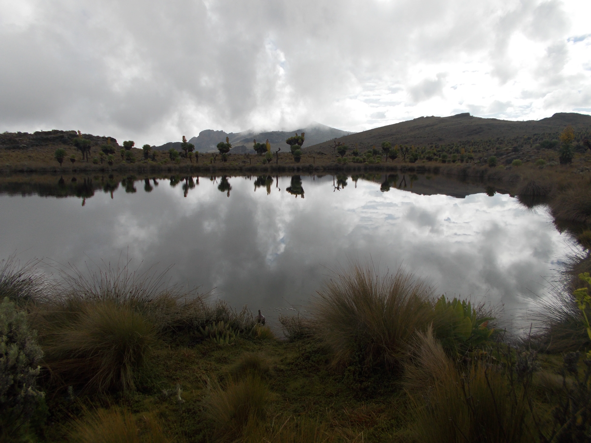

Off-the-beaten-path adventures. You feel it first in the terrain: steeper paths, changing weather, big views opening gradually, and that satisfying sense that every step is earning the experience.
There is a satisfying honesty to these experiences. They feel earned, scenic, and full of small moments that make the destination more memorable than a simple viewpoint ever could.
What Makes The Journey Feel Earned
You feel it first in the terrain: steeper paths, changing weather, big views opening gradually, and that satisfying sense that every step is earning the experience.
There is a satisfying honesty to these experiences. They feel earned, scenic, and full of small moments that make the destination more memorable than a simple viewpoint ever could.
How The Journey Builds Momentum
Travelers who enjoy this style of trip tend to remember the progression of the experience, not just the highlight at the end.
The result is an experience that feels vivid while you are there and surprisingly durable in memory afterwards.
Timing, Effort, And Pacing
Preparation matters here, especially around weather, fitness, transport, and how the activity fits into the rest of the itinerary.
For travelers building a wider route, this experience often works best when paired with nearby scenery, good overnight pacing, and enough room to enjoy the destination properly rather than rushing through it.
Final Thoughts
This is the kind of experience that rewards people twice: once in the moment, and again later when they remember just how vivid it all felt.
For travelers who want Uganda to feel immersive rather than rushed, Exploring the Hidden Trails of Eastern Uganda captures exactly the kind of experience that can turn curiosity into lasting affection for the country.